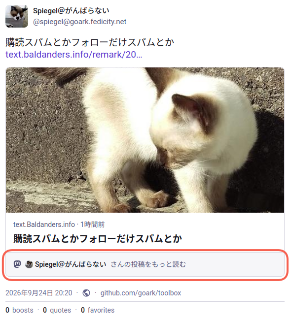
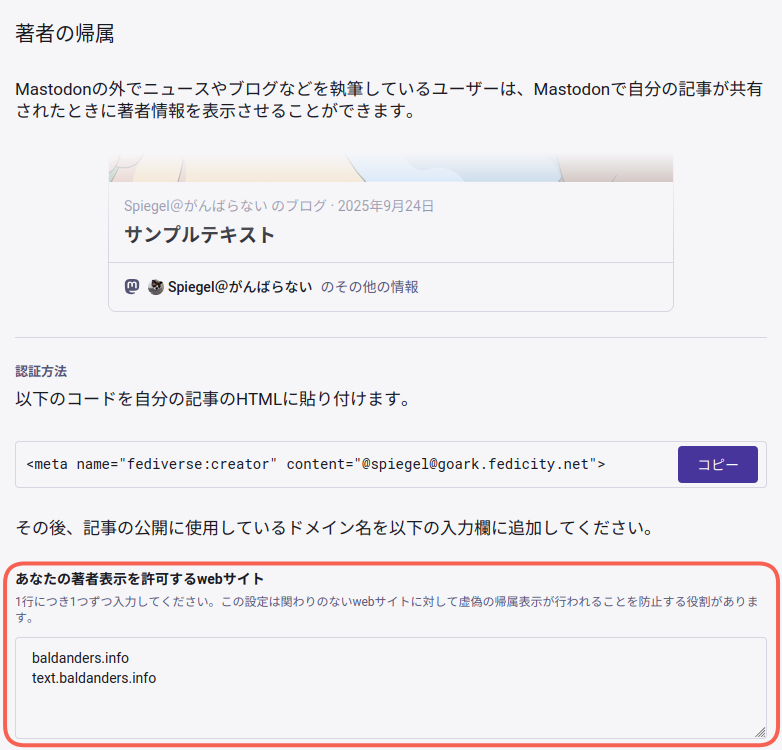

Web ページの著者情報に Fediverse/Mastodon アカウントを設定する

正式には Mastodon v4.3 からの機能らしいのだが Web ページの <meta> 要素に著者情報として Fediverse/Mastodon アカウントを設定できるようになっている。
We’ve decided to create a new kind of OpenGraph tag—the same kind of tags you have on your website to determine which thumbnail image will appear on the preview for the page when shared on Discord, iMessage, or Mastodon. It looks like this:
<meta name="fediverse:creator" content="@Gargron@mastodon.social" />.The handle can be any fediverse account, not just Mastodon. That includes Flipboard, Threads, WordPress (with the ActivityPub plugin installed), PeerTube, Pixelfed, and many others. It will work with and without the leading at-symbol for the handle. If multiple tags are present on the page, the first one will be displayed, but we may add support for showing multiple authors in the future. We intend to propose a specification draft for other ActivityPub platforms in the coming weeks.
これは以前からある rel="me" を使った Web サイト認証とは異なる。
たとえば Mastodon アカウントが @username@mstdn.example.com なら Web ページの <head> 要素内に以下の <meta> 要素を追記する。
<meta name="fediverse:creator" content="@username@mstdn.example.com">
上の引用文では Open Graph 語彙の新種みたいに書かれているが，厳密な RDFa の語彙があるわけではなく，固定名 fediverse:creator のデータを name 属性と content 属性の組で記述しているに過ぎない。
どちらかというと Twitter Card の仕組みに近いかな。
上手く設定できればリンクプレビューに著者情報が表示される。 こんな感じ。

全く関係ない Web ページに著者情報を設定されるのは困るので，ユーザのプロフィール設定で有効なドメインを指定する。

{kind=link}
上の例なら baldanders.info および text.baldanders.info ドメインの Web ページに対してのみ著者情報が有効になる。
ブログ等を運営している方で自力で <meta> 要素を設置可能であれば，検討してみてもいいんじゃないだろうか。